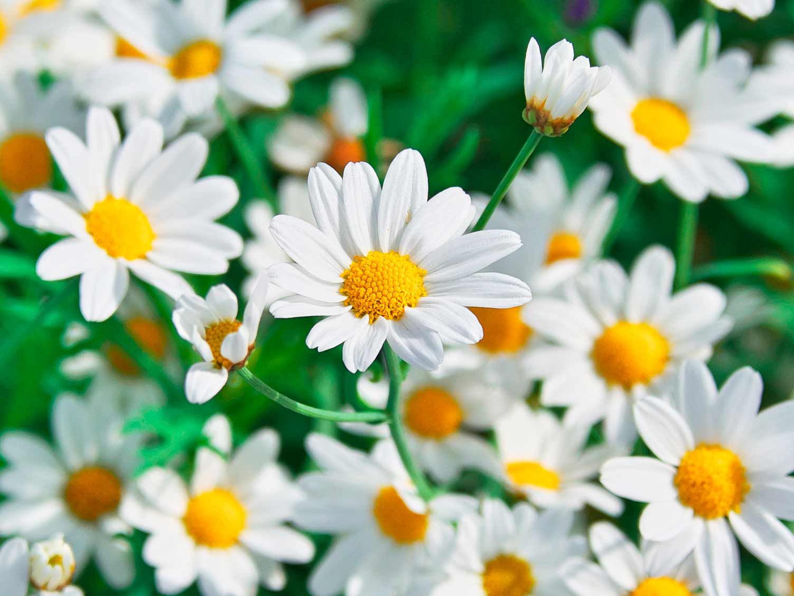
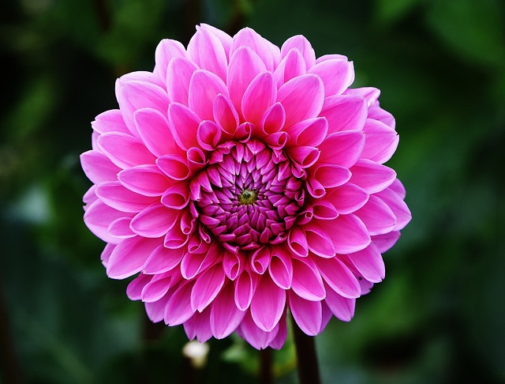
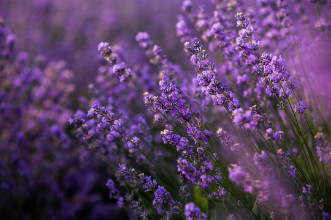

Chamomile
Chamomile is one of the oldest, most widely used and well documented medicinal plants in the world and has been recommended for a variety of healing applications (7).

Dahila
Dahlia is a genus of bushy, tuberous, herbaceous perennial plants native to Mexico and Central America. As a member of the Asteraceae family of dicotyledonous plants, its relatives include the sunflower, daisy, chrysanthemum, and zinnia.

Lavender
Lavender is a perennial plant that can live up to 20 years, if the conditions are optimum. It is a beautiful aromatic shrub with average height of 2 feet (60 cm).